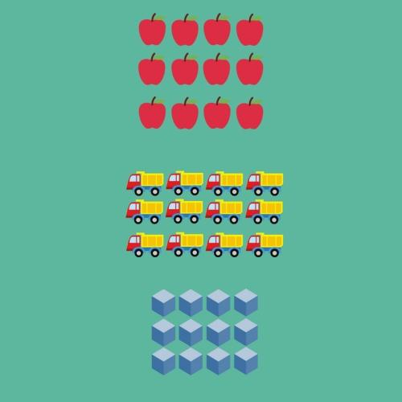

Exercício
Dificuldade
Pontos
Data limite
Créditos
Help Secundário_001
Normal
4.0
12/10/2022 12:00:00
(c)M@nso 2021
Calculos dentro do Array
Programa que calcula e guarda valores a partir dos valores pre-existentes no array

Input
Output
0 1 2 3 10 11 12 13 20 21 22 23 30 31 32 33 40 41 42 43 50 51 52 53 60 61 62 63 70 71 72 73
Algorithmi 22.05 Student version (c) Antonio M@nso 2022 Instituto Politécnico de Tomar - All rights reserved